DANIEL RESCHKE DE LIMA
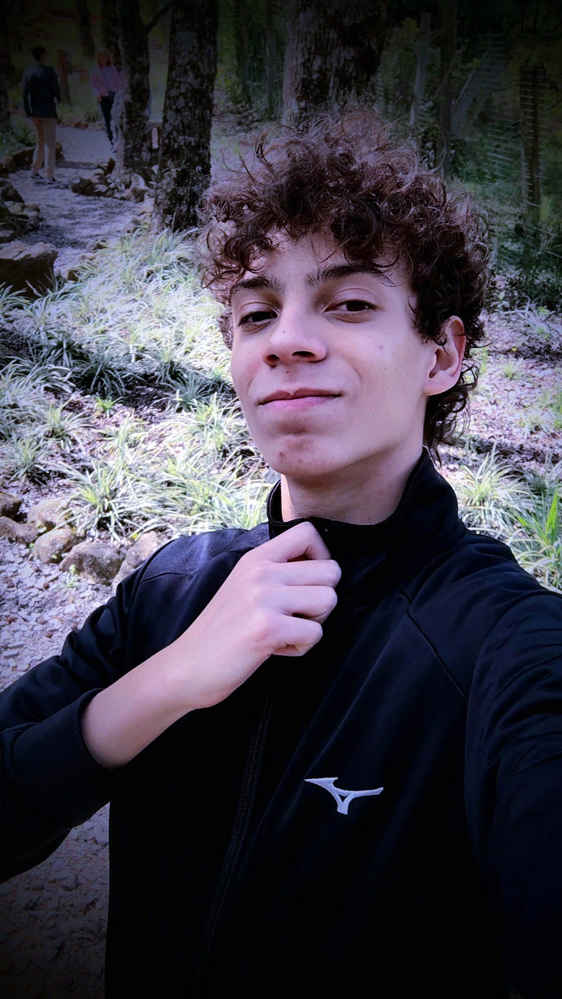
➜ Sobre mim
Sou estudante do Instituto Federal De Ciência e Tecnologia do Rio Grande do Sul (IFRS)
e estou presente no Curso Técnicco de Informática Integrado ao Ensino Médio, ou seja, não bastava o ensino médio, ainda tem o técnico.
Prazer, me chamo Daniel; espero que não tenhamos que trabalhar.
Atualmente estou no segundo ano de curso e não sou tão chegado a essa área do conhecimento. Embora ache muito interessante as interconexões da TI com outras competências, as pessoas daqui amam complicar com tudo e botar nomezinho em inglês.
Planejo entrar em alguma faculdade das ciências naturais,
possivelmente farmácia e biologia e com muita sorte me tornar um pesquisador. Gosto muito das vidas pequenas e gostaria de entendê-las melhor. Tenho muitas softskills; caso queira saber o estado de alguma, pergunte. Estou sempre aberto a um diálogo.
➜ Projetos
Já participei de alguns projetos. Tenho paixão por pesquisa cíentifica e por alguns assuntos na ciência, como imunologia, botânica, farmácia, vírus, bactérias, o mundo na Antártica,...
PANC
Neste projeto, que participei como bolsista de extensão do IFRS (campus Feliz), eu ativamente descrevia especíes de Plantas Alimentícias Não Convencionais.
Depois, eu palestrava suas informações em diferentes escolas de municípios próximos para um maior repercursão desses saberes tão valiosos.
Gostei imensamente de ter me envolvido nisso.
IMUNOLOGIA
Neste outro, fornecido por meio de um programa de iniciação científica da PUCRS, faço o cultivo de células
e por sua vez vírus para realizar alguns testes e entender mecanismos de defesa do sistema imunólogico.
Considero esse projeto muito importante, pois almejo de verdade seguir nesta área.

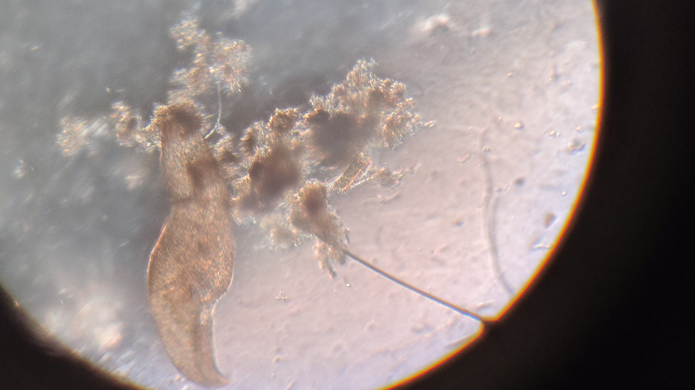
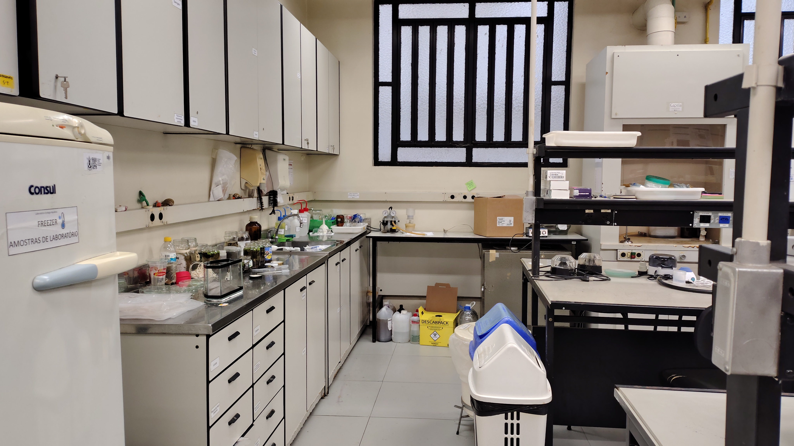
➜ Hobbies
Tenho vários hobbies, não sou uma pessoa muito parada. Tenho grande afinidade com o mundo das artes, gosto de pintar, pensar, desenhar, escrever, fotografar. Também, gosto imensamente de cozinhar, porque amo comer. Além disso amo jogar jogos, competitivos ou não, ver séries, filmes e desenhos animados. São coisas que me entretem e que me retornam algo, seja material, seja emoção.


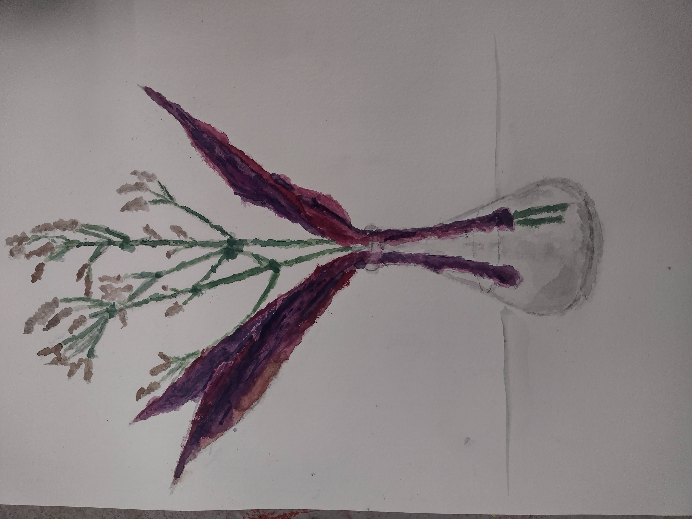
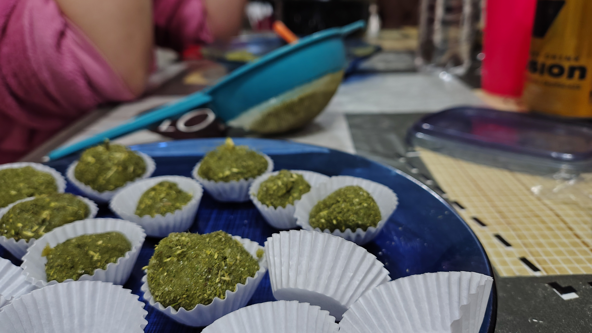

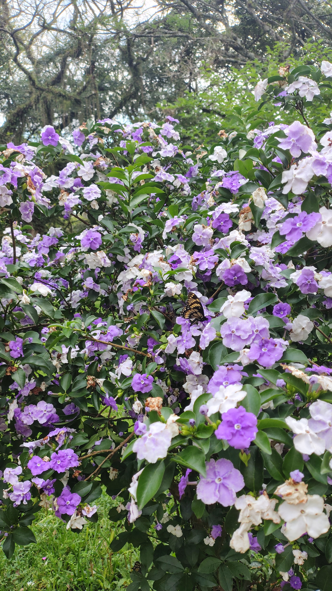

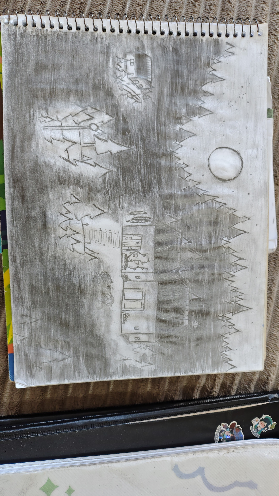
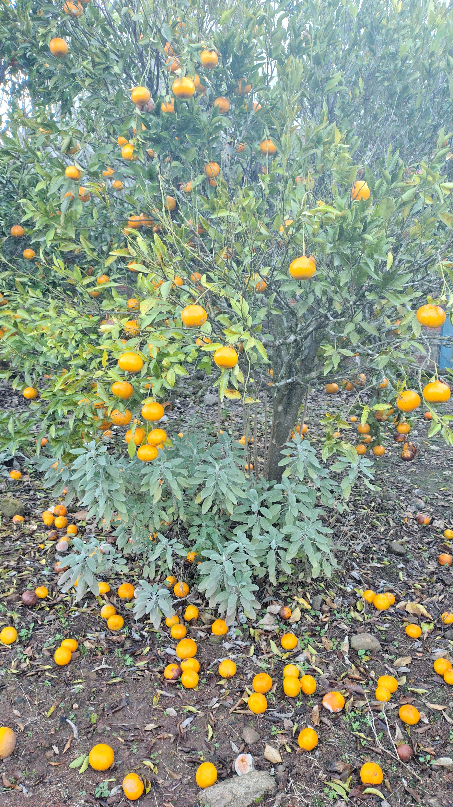
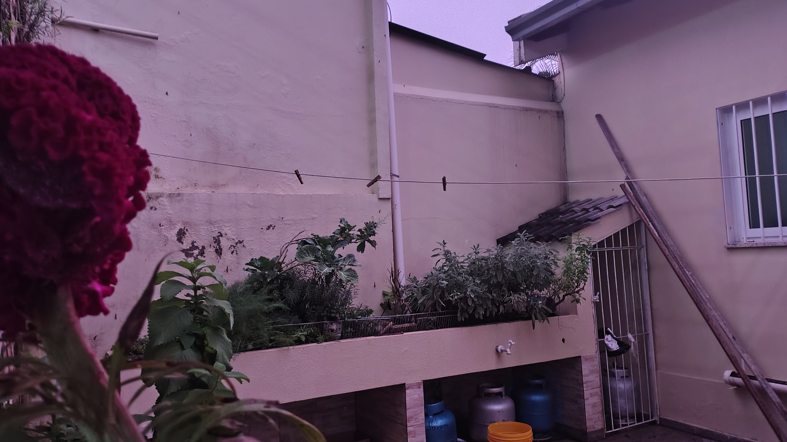
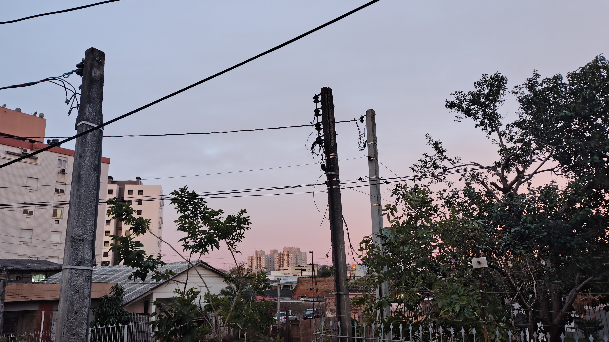
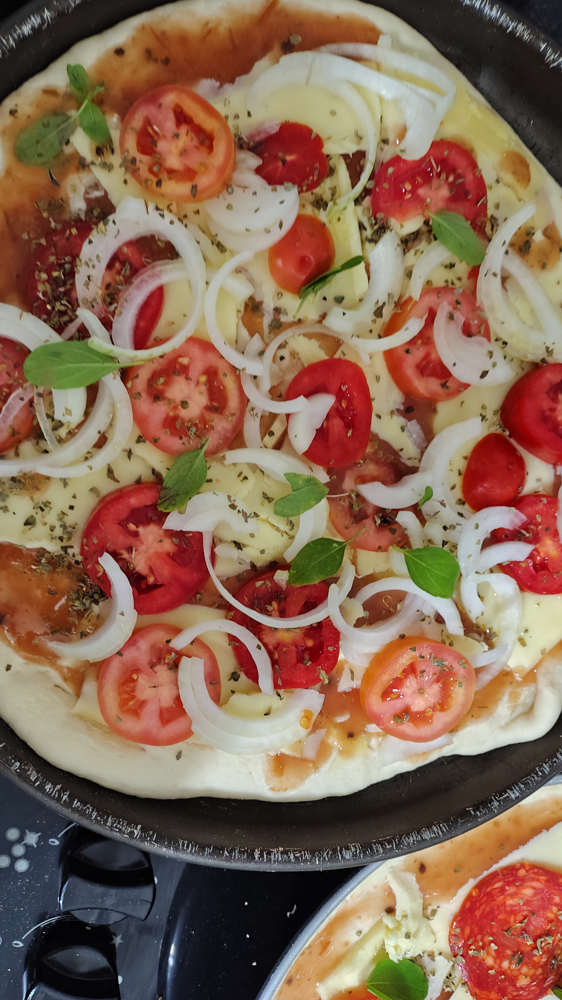
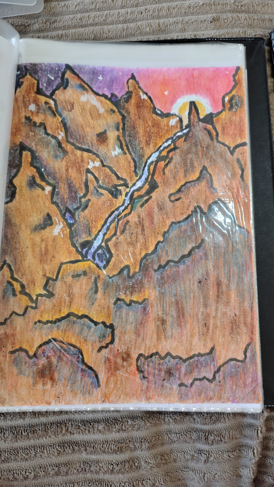
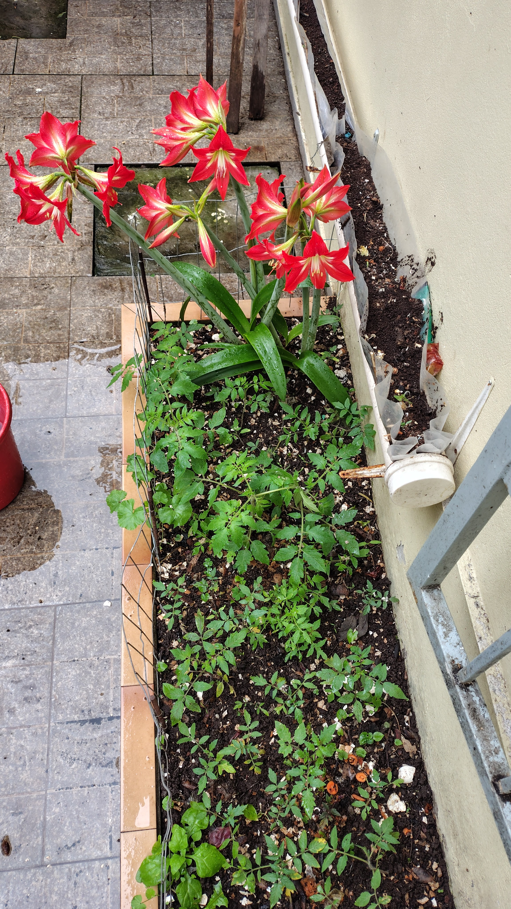

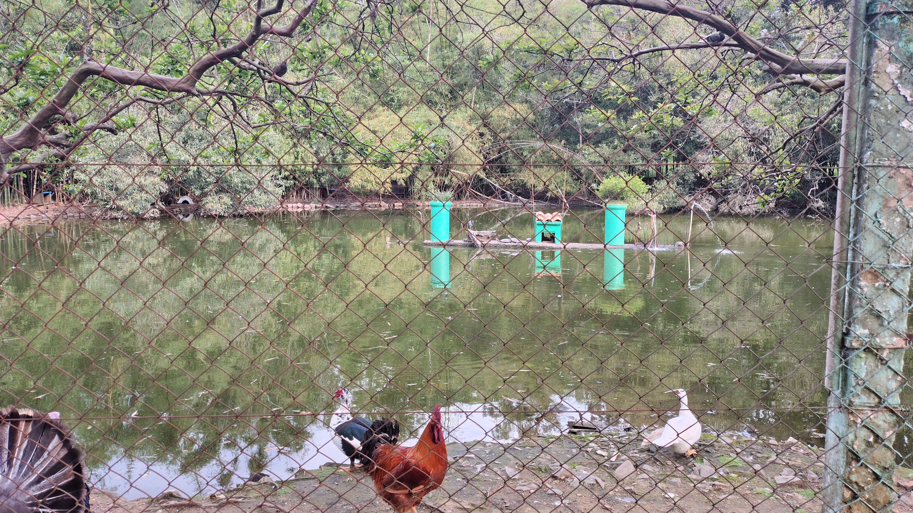
➜ Contato
Não gostaria de nenhum contato de trabalho, nunca estou disponível.
Não quero saber de networkings ou onboardings, muito menos de calls. Só se for para comer.
Telefone: (51) ????????
E-mail: danielreschkelima@gmail.com
Portifólio feito com HTML, CSS e JS no dia 14 de outubro de 2025 por Daniel Reschke de Lima.